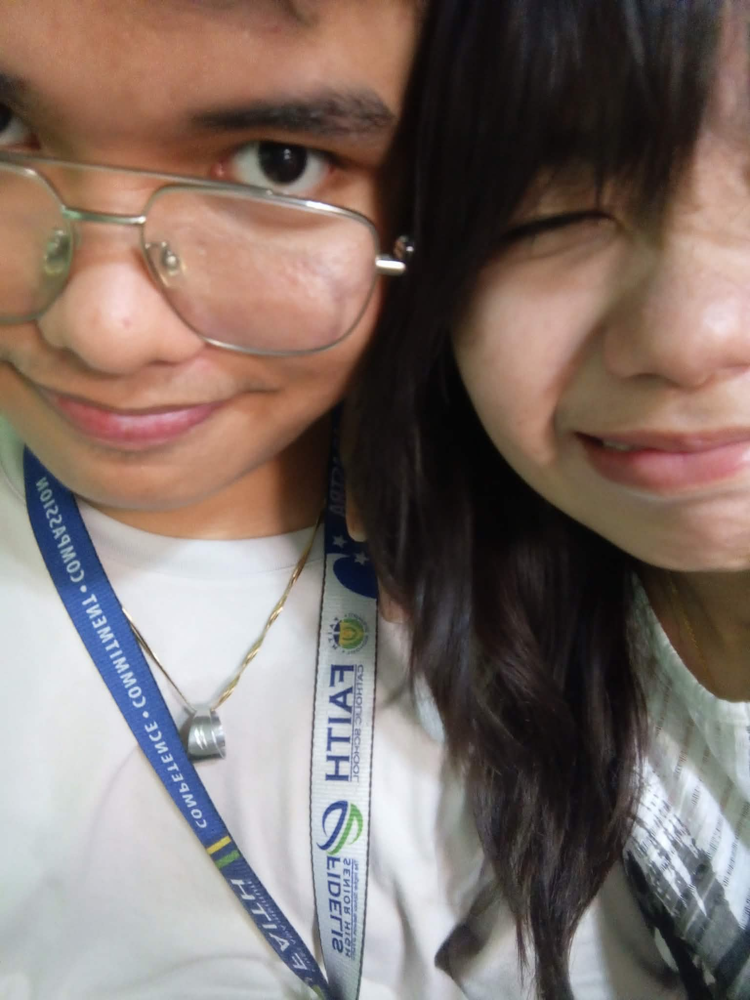
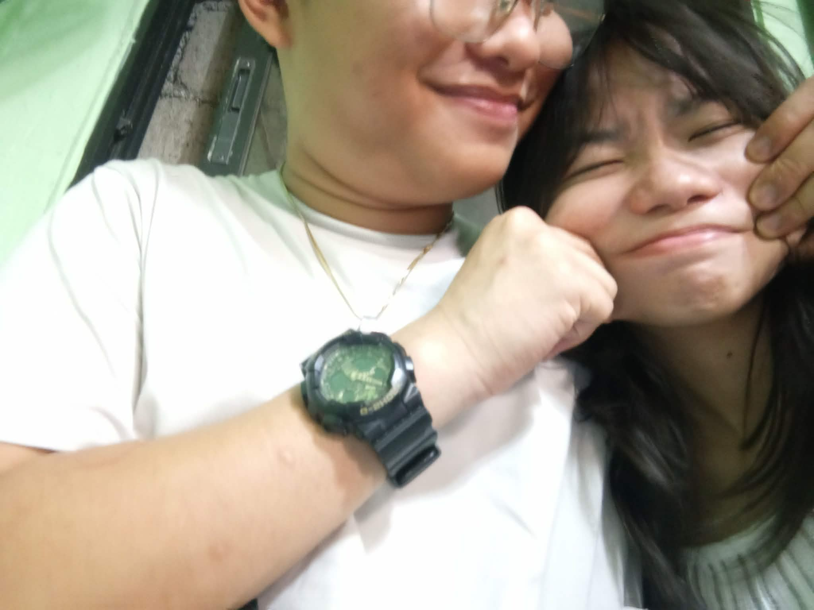
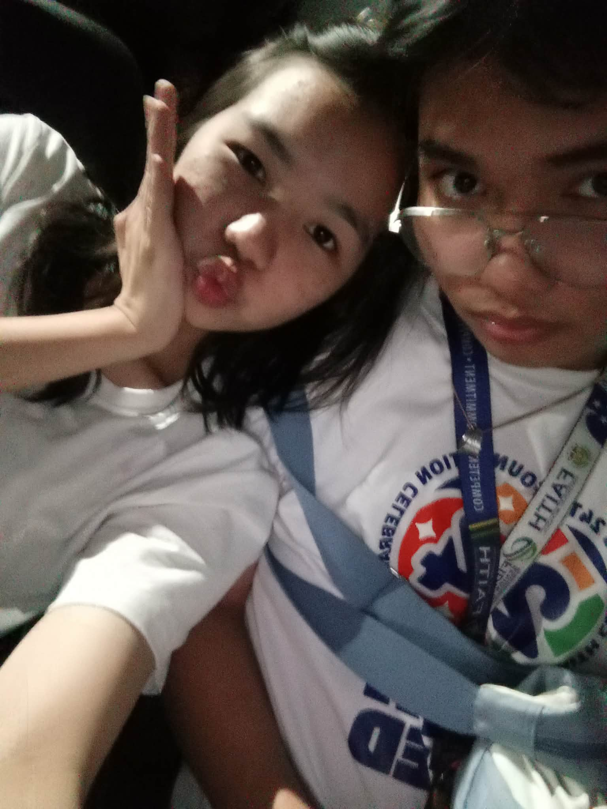
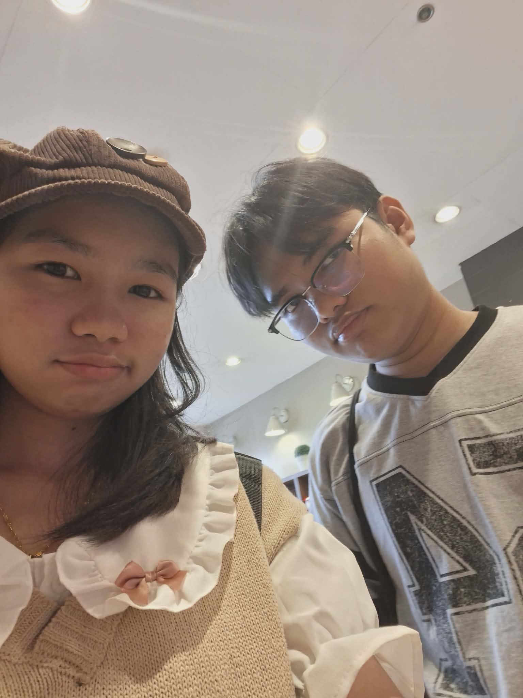
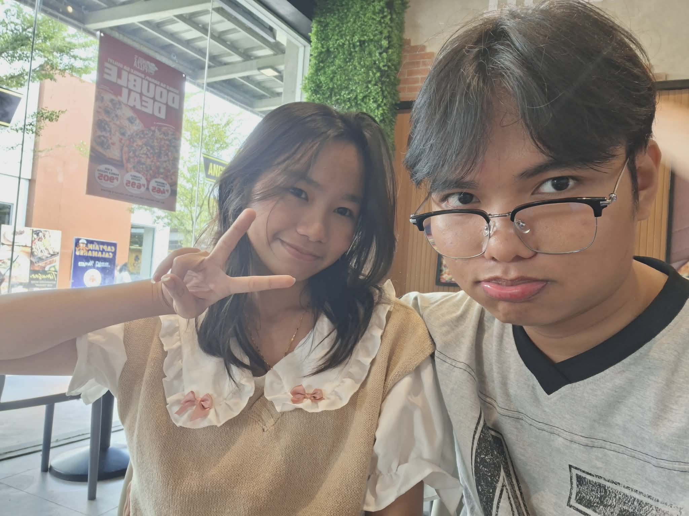

Hello babyyy, remember these pictures? These 2 were pictures of us when we were still friends.
Our friendship before was the cause of what we have today, from simple hangouts and enjoyment,
we are now together looking back at this part of our past. I'm very glad that I got to meet someone
wonderful as you. With you, even though we were just friends before, my life got brighter and more alive
because of you. I have no regrets of meeting you because I feel like the moment I met you and got close
to you, it was a sign from God that you are the person He wants me to be with for the rest of my life.
I'm so thankful for meeting youuuu babyyy. I LOVE YOUUUU SOO MUCHHH 💖
Your Birthday 💞


Remember when it was your 18th birthday? April 23, 2025 the day that I confessed my love
for you by using a letter and a banana cake hihi. I was really nervous and afraid of what you'll think of me
a friend falling in-love with you. I was afraid of what you'll say or react and honestly I was
shocked that you gave me chance to show you how much I raelly like you. I'm thankful for you,
for giving me a chance to love and take care of you. This day is very memorable, you were the first
person I ever danced with. Every moment that day feels like a once in a lifetime moment, I honestly
didn't want to leave because when I'm with you everything is so quiet.
Our first movie date 💌

I still remember this day very clearly, we finished our grad practice early and decided to watch
"Final Destination: Bloodline" I was afraid at first because I told you I don't like to watch gore
movies, and that I'm not used to watching those kind of movies. But then I stil watched it with you
because you really wanted to and I came and watched it with you, I still remember when we did something
while watching the movie hihi, so nvm that, after the movie we bought Shawarma and ate at that place I forgot
what its' called TvT, I LOVE YOUUUU SOOOO MUCHHH MY PRETTY WOMANNNNN
Our First Kiss 💌
I couldn't find our picture when we were at BLL the place of our first kiss, when we were on the way
at the event place, I was overthinking because I'm not with you and I was very worried if you're okay
after about an hour of tranportation we finaly arrived at the place and then I immediately looke for you
all the time I was with you, we ate together, walked together, and kissed each other HSHSHS, but before that
we had fun, we participated with the activities and explored the place. Night comes and the Foam Party began
we had fun then we decided to run away from the crowd. When we finally got the chance to be alone, I grabbed you
then kissed you. It was so magical, you were my first kiss, I still remember the taste and texture of those soft
and pink lips when I first kissed you, up until this day your lips is still the one that I want to kiss
Our Gradation 💌
Again, I couldn't find our grad pic, the one were someone took a picture of us while I was talking with your
mom, I was very nervous when I was talking with your parent because what if she told me to stay away from you
but I'm so glad that she allowed me to know you and love you. Tho it's kinda sad because you didn't meet my parents
when we had the chance, but that's okay because even tho it didn't happen I'm still glad that we were able to graduate
and grow together. It was an ending to a chapter of our life and the beginning of our new one, a chapter dedicated for
the both of us.
Courting stage 💌
The courting stage, when tito allowed me to court you, I was finally given the opportunity to show you
how much I'm serious about you, I did everything I can to pass the test and be called your boyfriend, months passed
during my courting stage, we both experienced things, we loved, fought, and most importantly we grew.
It wasn't an easy path, we had hardships and we both struggled to adjust to each other, but hey, we still made it
I'm so thankful for you, for not giving up on us. I love youuu sooo muchhhh.
IT'S A YES 💌
I WAS VERY HAPPYYYY, you finally said YES. November 22, 2025. You finally said the words, "sinasagot na kita"
I jumped with joy, I'm so happy that I have the chance to call you my girlfriend. After all the things we encountered
after every fight, arguments, tampuhan and everything, after that moment every arguments we did in the past, all of them
vanished because it was another start for us as couples. Up until now that moment is one of the best I've experienced.
Our First monthsary 💌


OUR FIRST MONTHSARY and it was my birthday December 22, 2025. BEST DAY EVER i got to spend my special day with the woman I love
I picked you up and we both went to Outlets and we bought a cake to celebrate our first month of being together, we walked around
we ate at a pizza place, talked and we had fun. Our first month is the besttttt. Everything is the best when I'm with
you. After that we went home and I came with you so you would get home safely. Then we spent the remaining hours of that day together]
before I went to church with my family, I love you so muchhh babbyyyyyy I experienced everything with you for the
first time in my life.
It's our 2nd monthsary 💌
For our 2nd monthsary January 22, 2026. I baked you banana cake to remind you of the day I confessed mt feelings
and you know, I like cooking food for my baby. I baked banana cake and bought you Mcdonalds' and Balut because you wanted.
Seeing you eat and smile is enough to make my heart jump, you're so beautiful and gorgeous. I'll never get tired
of loving you my gorgeous wifeeeee. We watched a movie while eating frenchfries and we cuddled, kiss and loved each other.
I'm still craving for mor monthsaries and soon more anniversaries hihi MWUAAAAHHHHHH.